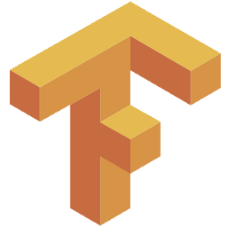
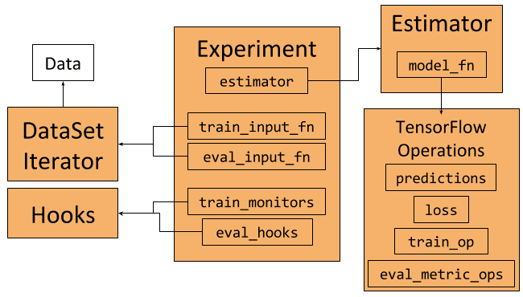
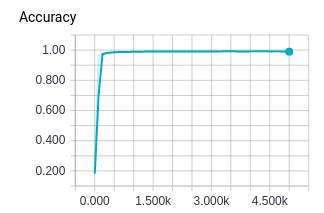

售前咨询电话
95187转1
TensorFlow中的那些高级API
摘要： 在这篇文章中，我们将看到一个使用了最新高级构件的例子，包括Estimator（估算器）、Experiment（实验）和Dataset（数据集）。值得注意的是，你可以独立地使用Experiment和Dataset。不妨进来看看作者是如何玩转这些高级API的。

TensorFlow拥有很多库，比如Keras、TFLearn和Sonnet，对于模型训练来说，使用这些库比使用低级功能更简单。尽管Keras的API目前正在添加到TensorFlow中去，但TensorFlow本身就提供了一些高级构件，而且最新的1.3版本中也引入了一些新的构件。
在这篇文章中，我们将看到一个使用了这些最新的高级构件的例子，包括Estimator（估算器）、Experiment（实验）和Dataset（数据集）。值得注意的是，你可以独立地使用Experiment和Dataset。我在这里假设你已经了解TensorFlow的基础知识；如果没有的话，那么TensorFlow官网上提供的教程值得学习。

Experiment、Estimator和DataSet框架以及它们之间的交互。
我们在本文中将使用MNIST作为数据集。这是一个使用起来很简单的数据集，可以从TensorFlow官网获取到。你可以在这个gist中找到完整的代码示例。使用这些框架的其中一个好处是，我们不需要直接处理图和会话。
Estimator类代表了一个模型，以及如何对这个模型进行训练和评估。我们可以像下面这段代码创建一个Estimator：
return tf.estimator.Estimator(
model_fn=model_fn, # First-class function
params=params, # HParams
config=run_config # RunConfig
)要创建Estimator，需要传入一个模型函数、一组参数和一些配置。
模型函数是一个Python函数，并作为一级函数传递给Estimator。稍后我们会看到，TensorFlow在其他地方也使用了一级函数。将模型表示为一个函数的好处是可以通过实例化函数来多次创建模型。模型可以在训练过程中用不同的输入重新创建，例如，在训练过程中运行验证测试。
模型函数把输入特征作为参数，将相应的标签作为张量。它也能以某种方式来告知用户模型是在训练、评估或是在执行推理。模型函数的最后一个参数是超参数集合，它们与传递给Estimator的超参数集合相同。模型函数返回一个EstimatorSpec对象，该对象定义了一个完整的模型。
EstimatorSpec对象用于对操作进行预测、损失、训练和评估，因此，它定义了一个用于训练、评估和推理的完整的模型图。由于EstimatorSpec只可用于常规的TensorFlow操作，因此，我们可以使用像TF-Slim这样的框架来定义模型。
Experiment类定义了如何训练模型，它与Estimator完美地集成在一起。我们可以像如下代码创建一个Experiment对象：
experiment = tf.contrib.learn.Experiment(
estimator=estimator, # Estimator
train_input_fn=train_input_fn, # First-class function
eval_input_fn=eval_input_fn, # First-class function
train_steps=params.train_steps, # Minibatch steps
min_eval_frequency=params.min_eval_frequency, # Eval frequency
train_monitors=[train_input_hook], # Hooks for training
eval_hooks=[eval_input_hook], # Hooks for evaluation
eval_steps=None # Use evaluation feeder until its empty
)以下几种情况会把Experiment对象作为输入：
一旦定义了experiment，我们就可以像下面这段代码那样使用learn_runner.run来运行它训练和评估模型：
learn_runner.run(
experiment_fn=experiment_fn, # First-class function
run_config=run_config, # RunConfig
schedule="train_and_evaluate", # What to run
hparams=params # HParams
)与模型函数和数据函数一样，learn_runner将一个创建experiment的函数作为参数传入。
我们将使用Dataset类和相应的Iterator来表示数据的训练和评估，以及创建在训练过程中迭代数据的数据馈送器。 在本示例中，我们将使用在Tensorflow中可用的MNIST数据，并为其构建一个Dataset包装。例如，我们将把训练输入数据表示为：
# Define the training inputs
def get_train_inputs(batch_size, mnist_data):
"""Return the input function to get the training data.
Args:
batch_size (int): Batch size of training iterator that is returned
by the input function.
mnist_data (Object): Object holding the loaded mnist data.
Returns:
(Input function, IteratorInitializerHook):
- Function that returns (features, labels) when called.
- Hook to initialise input iterator.
"""
iterator_initializer_hook = IteratorInitializerHook()
def train_inputs():
"""Returns training set as Operations.
Returns:
(features, labels) Operations that iterate over the dataset
on every evaluation
"""
with tf.name_scope('Training_data'):
# Get Mnist data
images = mnist_data.train.images.reshape([-1, 28, 28, 1])
labels = mnist_data.train.labels
# Define placeholders
images_placeholder = tf.placeholder(
images.dtype, images.shape)
labels_placeholder = tf.placeholder(
labels.dtype, labels.shape)
# Build dataset iterator
dataset = tf.contrib.data.Dataset.from_tensor_slices(
(images_placeholder, labels_placeholder))
dataset = dataset.repeat(None) # Infinite iterations
dataset = dataset.shuffle(buffer_size=10000)
dataset = dataset.batch(batch_size)
iterator = dataset.make_initializable_iterator()
next_example, next_label = iterator.get_next()
# Set runhook to initialize iterator
iterator_initializer_hook.iterator_initializer_func = \
lambda sess: sess.run(
iterator.initializer,
feed_dict={images_placeholder: images,
labels_placeholder: labels})
# Return batched (features, labels)
return next_example, next_label
# Return function and hook
return train_inputs, iterator_initializer_hook调用这个get_train_inputs将返回一个一级函数，用于在TensorFlow图中创建数据加载操作，以及返回一个用于初始化迭代器的Hook。
本示例中使用的MNIST数据最初是一个Numpy数组。我们创建了一个占位符张量来获取数据；使用占位符的目的是为了避免数据的复制。接下来，我们在from_tensor_slices的帮助下创建一个切片数据集。我们要确保该数据集可以运行无限次数，并且数据被重新洗牌并放入指定大小的批次中。
要迭代数据，就需要从数据集中创建一个迭代器。由于我们正在使用占位符，因此需要使用NumPy数据在相关会话中对占位符进行初始化。可以通过创建一个可初始化的迭代器来实现这个。在创建图的时候，将创建一个自定义的IteratorInitializerHook对象来初始化迭代器：
class IteratorInitializerHook(tf.train.SessionRunHook):
"""Hook to initialise data iterator after Session is created."""
def __init__(self):
super(IteratorInitializerHook, self).__init__()
self.iterator_initializer_func = None
def after_create_session(self, session, coord):
"""Initialise the iterator after the session has been created."""
self.iterator_initializer_func(session)IteratorInitializerHook继承自SessionRunHook。这个钩子将在相关会话创建后立即调用after_create_session，并使用正确的数据初始化占位符。这个钩子由我们的get_train_inputs函数返回，并在创建时传递给Experiment对象。
train_inputs函数返回的数据加载操作是TensorFlow的操作，该操作每次评估时都会返回一个新的批处理。
现在，我们已经定义了所有内容，可以使用下面这个命令运行代码了：
python mnist_estimator.py --model_dir ./mnist_training --data_dir ./mnist_data如果不传入参数，它将使用文件开头的默认标志来确定数据和模型保存的位置。
在训练过程中，在终端上会输出这段时间内的全局步骤、损失和准确性等信息。除此之外，Experiment和Estimator框架将记录TensorBoard可视化的某些统计信息。如果我们运行这个命令：
tensorboard --logdir='./mnist_training'那么我们可以看到所有的训练统计数据，如训练损失、评估准确性、每个步骤的时间，以及模型图。

TensorBoard可视化中的评估准确度
我写这篇文章，是因为我在编写代码示例时，无法找到有关Tensorflow Estimator 、Experiment和Dataset框架太多的信息和示例。我希望这篇文章能向你简要介绍一下这些框架是如何工作的，它们采用了什么样的抽象方法以及如何使用它们。如果你对使用这些框架感兴趣，下面我将介绍一些注意点和其他的文档。
文章原标题《Higher-Level APIs in TensorFlow》，作者：Peter Roelants，译者：夏天，审校：主题曲。
文章为简译，更为详细的内容，请查看原文需要爬梯，不方便的同学也可以下载下方的PDF附件，阅读原文内容。

太赞！！！！！